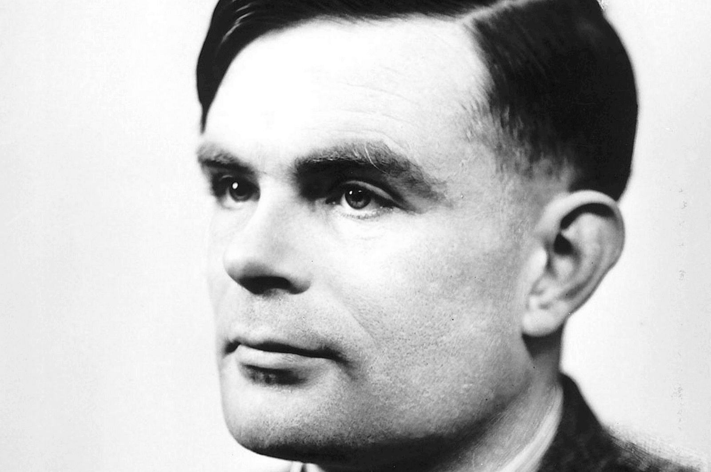

1950
The British mathematician Alan Turing publishes his article "Computing Machinery and Intelligence" and asks the question "Can machines think?"
He develops his blind test to determine who is the human or the computer (the Turing Test)